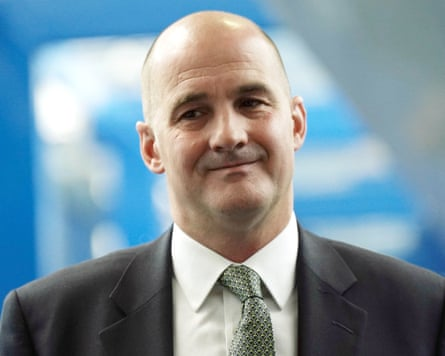
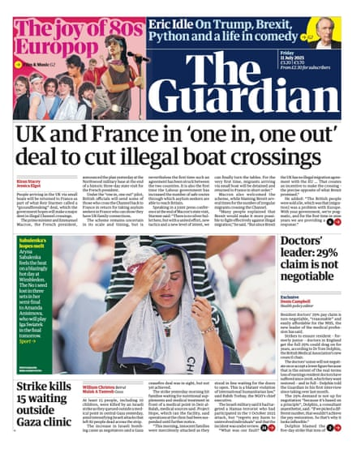

Good morning. A record number of millionaires are fleeing the UK, or so the headlines would have you believe. According to much of the British press over the past week, any attempt by Labour to introduce a wealth tax would send the country’s remaining super-rich scrambling for the exits.
The problem? There isn’t any clear evidence yet of a mass millionaire exodus from the UK. While there have been anecdotal stories of some wealthy individuals leaving recently, overall the number of millionaires – and billionaires – has been steadily rising over the past two decades.
At the centre of some of these stories is a study by Henley & Partners, a global migration firm, that has since distanced itself from the sensationalist coverage. Versions of this same “millionaire flight” claim have appeared in 2023, 2024, 2025 … you get the picture.
Mark Bou Mansour , head of communications at the Tax Justice Network, published the follow-up study that he said debunked the idea that the UK is seeing an unprecedented outflow of wealthy individuals.
I spoke to him about the flaws in this widely reported story, why it keeps resurfacing, and what effect it has on the conversation we should be having about wealth and tax reform.
That’s after the headlines.
Five big stories
- Immigration | People arriving in the UK via small boats will be returned to France in a trial that Keir Starmer hopes will make a major dent in the number of people crossing the Channel illegally. For each person British officials send back, the UK will bring over from France an asylum seeker who can show family connections in Britain.
- Gaza | At least 15 people, including 10 children and several mothers, have been killed by an Israeli strike as hungry families queued waiting for nutritional supplements and medicine in central Gaza.
- Welfare | Conservative leader Kemi Badenoch has said she does not believe one in four people are disabled, and that the term is in danger of losing its meaning , as she used a speech to criticise the size of the welfare state.
- Security | Iran’s intimidation – including the fear of physical attack and assassination of Iranian dissidents living in the UK – is comparable in scale to the threat posed by Russia, parliament’s intelligence and security committee has found .
- Music | Photo agencies are to boycott the rest of the Oasis reunion tour – including the first “homecoming” gig in Manchester on Friday – over restrictions imposed on how newspapers, magazines, TV broadcasters and digital publishers can use pictures from the gigs.
In depth: What are the claims?
Campaigners say taxing extreme wealth is essential for fairness and public servicesPhotograph: Wiktor Szymanowicz/Future Publishing/Getty
Henley & Partners’ latest report predicts that a record 142,000 millionaires will relocate internationally this year, with the UK expected to see the largest net outflow.
In 2024, the company forecast that the UK would have the second-highest millionaire outflow , losing 9,500 high-net-worth individuals. A year earlier, it reported that 16,500 millionaires had left the UK between 2017 and 2023.
Henley & Partners did not respond to my request for comment, but it’s worth noting that the company denies attributing the so-called millionaire exodus to Labour’s tax policies, telling Tax Justice UK: “If papers such as the Telegraph, Times, Mail decide to add their own layer on to that, and deliberately exclude from their story our standard reminder to them that these were the Conservatives’ tax changes, then I think your argument is with them, not with us.”
Still, that didn’t stop nearly 11,000 news pieces across print, broadcast and online media from covering the so-called millionaire exodus in 2024, with many continuing in the same vein this year and placing the blame on Labour.
What does the data say?
Mark Bou Mansour first came across the claim that millionaires are leaving the UK en masse while doing a BBC interview about how a wealth tax could work – and how countries can raise billions by copying Spain’s tax on the super-rich .
“It was the first I’d heard of it, and right away the numbers sounded odd to me. I pointed out that at the time, I think the number was about 9,500 and I said: ‘Well, there are something like three million millionaires in the UK, so this is less than 1%.’ It’s a non-issue,” Mansour told me.
Mansour and the team at Tax Justice UK then started searching to see what this report actually was. “We saw it getting more and more traction. This was last year, at a time when calls for wealth taxes were getting huge global momentum. It was being discussed among the G20. And so, all of a sudden these claims about millionaires leaving countries also gained momentum,” he said.
They started to look into the report and found several issues, ranging from how the findings are presented to how they are calculated.
“There is no millionaire exodus. If you look at their published migration numbers going back to 2013, millionaire migration rates have consistently stood at less than 1% every year since then, both globally and nationally. So, what their data actually shows, taken at face value, is that millionaires are highly immobile,” Mansour said.
What’s wrong with the analysis?
Mansour quickly reached the conclusion that the numbers used were highly unreliable and that the methodology was quite opaque. Some of the data appeared to be based on where wealthy millionaires self-report their locations on LinkedIn.
“My favourite example of how ridiculous this is, is that there were about six millionaires who got widespread news coverage in 2024 about leaving the UK due to tax reasons. All six of their LinkedIn profiles still say they’re based and working in the UK,” Mansour said.
Henley has pushed back on this, noting that the report relied on multiple sources, not just LinkedIn.
But the company has not published the underlying data behind its claim, according to Mansour, so we don’t know how many people they’ve actually tracked leaving each country. What they do share are broad estimates, but they don’t explain how they get from what they’ve observed to the bigger picture they present.
He also argues that the sample is unrepresentative and skewed towards centimillionaires and billionaires, something that was acknowledged by Henley & Partners’ report author in an interview with the BBC (you can listen to that exchange here ).
Tax Justice UK tried to reverse engineer their 2024 numbers, based on the details they could access. They estimated that fewer than one billionaire and one centimillionaire were leaving the UK. “It comes to something like 0.3 of a billionaire, which is impossible to observe, because people are whole. So that gives you a sense of how absurd it is.”
How did the media report the story?
Some media went on to widely exaggerate the link between this report and taxes, Mansour said. “They’ve framed the so-called exodus as driven by fear of tax changes, even when the Henley report itself, to its credit, does not say that. In many places, it says tax alone isn’t enough to influence relocation decisions.”
The Henley & Partners report has been cited in several news and opinion pieces discussing the pros and cons of a wealth tax.
Mansour added: “The way we see it, this millionaire story is a scare story. It’s a distraction from what we should really be talking about: taxing extreme wealth. We call for a wealth tax, and so do many others. There’s an international campaign for it now. The key message is: wealth taxes are about ending the special treatment that wealth collectors get over wealth earners.”
What conversation should we be having?
It will come as no surprise that Tax Justice UK supports a wealth tax.
Mansour argued that governments, especially in the global north, tax income from wealth, such as dividends and capital gains, at lower rates than income from work, like wages. While most people rely on earned income, he said the super-rich make their money from owning things. “This lighter tax treatment has helped the richest massively grow their fortunes while paying lower effective tax rates than the average worker, contributing to wider inequality, rising debt and even shorter life expectancy for others.”
He compares extreme wealth to smoking. “At one point, we thought smoking was good. Then we learned it kills. The same thing is happening with extreme wealth. Trickle-down economics said if the rich get richer, everyone benefits. But the data shows the opposite and it’s killing economies and killing people,” Mansour said.
He added: “We’re in a moment where the evidence is out there, but the regulation hasn’t yet caught up. And stories like the so-called millionaire exodus are used to push back against taking action. What a wealth tax does is create fairness: whether you’re a wealth collector or wealth earner, you get equal treatment in the tax system.”
When asked for evidence on where it worked, Mansour pointed to Spain. “When critics say wealth taxes ‘don’t work’, what they mean is that wealth taxes are powerful enough to scare the super-rich into lobbying for loopholes. Where wealth taxes failed, it was usually by design – riddled with exemptions under pressure from super-rich interests. Spain shows that when you design them properly, they raise substantial revenue quickly.”
There will be many across the political spectrum who will disagree with Mansour and Tax Justice UK. Among them is the Institute for Fiscal Studies, which this week dug into what it considers the difficulties in implementing a wealth tax. It noted: “It would require the government to set up a new administrative apparatus to value wealth – and valuation would be extremely difficult for some assets, such as private businesses.”
Regardless of where you stand, we can all agree that the conversation needs to be based on better-established facts. The entire country, both rich and poor, would benefit from that.
What else we’ve been reading
Jake Berry was briefly the Tory party chair under Liz Truss.Photograph: Aaron Chown/PA
- After former Tory chair Jake Berry’s defection to Reform , Jessica Elgot has a useful analysis of why it’s a “disaster” for Kemi Badenoch … and why it also presents a danger for Nigel Farage. Charlie Lindlar, acting deputy editor, newsletters
- I loved this piece by Morwenna Ferrier on the rise of the family planner and what it say about our desperate need for control over our increasingly limited free time. Aamna
- Guilt Trip is a fascinating new film from Guardian Documentaries about the pilots with eco-anxiety , “torn between childhood ambitions of flying and the impact of their industry on the world beneath them”, that have come together to try to reform their field. Charlie
- It’s been 30 years since the Srebrenica genocide . Julian Borger, the Guardian’s senior international correspondent, has this moving feature on the work that continues to identify and bury the remains of the thousands killed. Aamna
- HuffPost UK’s Natasha Hinde has a heart-rending report on inaccessible playgrounds that leave disabled children unable to safely play with their peers. “Sometimes I just sit and colour while the other kids play, but I don’t really want to go to the park nearby any more,” one child tells her. Charlie
Sport
Sem Verbeek celebrates with partner Katerina Siniakova after they won the mixed doubles final on Centre Court.Photograph: Tom Jenkins/The Guardian
Tennis | The world No 1 Aryna Sabalenka exited the semi-finals losing in three sets to Amanda Anisimova and venting at her opponent for celebrating one point “early”. Iga Swiatek reaches her first Wimbledon final where she faces Anisimova after ending Belinda Bencic’s fairytale with a commanding 6-2, 6-0 victory. Katerina Siniakova and Sam Verbeek took the mixed doubles crown in two tie-breaks, while the all-British pair Julian Cash and Lloyd Glasspool are into the men’s doubles final.
Cricket | Joe Root was unbeaten on 99 at the close after a hard-fought opening day at Lord’s, where England reached 251 for four against India in the third Test.
Cycling | Ireland’s Ben Healy struck out alone to win stage six of the Tour de France as Mathieu van der Poel took back a one-second overall lead.
The front pages
“UK and France in ‘one in, one out’ deal to cut illegal boat crossings” says the Guardian . The i has “New migrant swap deal to start in weeks as Macron blames Brexit for small boats crisis” and the Telegraph runs with “Macron: ‘Brexit lies’ to blame for crisis”. “‘Cave-in’ will fail to stop boats” – that’s the Express while the Mail scoffs “What a joke”. “It’s one in, one doubt” says the Metro . Second billing for that story in the Times which splashes on “Crackdown to cure UK of sick note epidemic”. “You’ll never change” the Mirror says of Gregg Wallace, citing “Beeb letter sacking him”. Top story in the Financial Times is “Moët Hennessy sexual harassment case shines light on company’s culture”.
Something for the weekend
Our critics’ roundup of the best things to watch, read, play and listen to right now
‘A fascinating portrait’ … Live Aid at 40: When Rock ’n’ Roll Took on the World.Photograph: BBC/Brook Lapping/Band Aid Trust
TV Live Aid at 40: When Rock ’n’ Roll Took on the World | ★★★★☆ On the evening of 23 October 1984, Bob Geldof had a social engagement at a Mayfair book launch. But before he left the house, Geldof watched a BBC television news report about a hellish famine in Ethiopia. Among the many startling, blackly comic archive clips in Live Aid at 40: When Rock ’n’ Roll Took on the World is footage of Geldof at that glitzy party, reeling from what he had seen on TV and remarking to a fellow guest that it was “gross” for them to be enjoying champagne and canapes. That tension between glamour and guilt is at the heart of this three-part retrospective that doesn’t ignore the flaws in Geldof’s grand plan to use music to feed the world. It’s a fascinating portrait of a complex man’s imperfect attempt to solve an impossible problem. Jack Seale
Music Clipse: Let God Sort Em Out | ★★★★★ Clipse’s first two albums, in 2002 and 2006, spawned a rabid cult following that, as Pusha T once rhymed, “put the hipsters with felons and thugs”. Let God Sort Em Out is as strong a restatement of the reunited Clipse’s skills and power as you could wish for . Said skills might be even more striking in 2025, because their stock in trade – vivid storytelling, technical brilliance made to seem effortless – has, aside from the occasional figure such as Kendrick Lamar or Doechii, little purchase in current mainstream hip-hop, dominated as it is by vibesmiths rather than genuine wordsmiths. Listening to the chemistry sparked by Clipse’s contrasting approaches – Pusha T’s relentlessness alongside No Malice’s more measured style, his sense of reflection amplified by his time away – is a salutary reminder of what you’ve been missing. Familiar but fresh, it’s one of the albums of the year. Alexis Petridis
Film Apocalypse in the Tropics | ★★★★☆ Petra Costa’s documentary tells a grim story about modern Brazil and leaves it up to us to decide if there is a happy ending. It is about the country’s leaders’ addiction to rightwing Christian fundamentalism and US-style prayer breakfasts, a strident political mannerism linked to the fact that evangelical Christians make up an estimated 30% of the population; it is on their behalf that Brazil’s religious right, via its substantial bloc vote in Congress, has now created what amounts to a minority-rule theocracy. Democracy has never looked so vulnerable. Peter Bradshaw
Book The Mission by Tim Weiner Why has an organisation with huge amounts of money at its disposal, a record of recruiting the brightest and the best, and the widest of remits, failed to notch up a better record? It’s true that we may not know about many of the CIA’s successes. But we know about a lot of its failures, and some of them have marked US history ineradicably. In The Mission , Tim Weiner, whose reporting on the CIA in the New York Times was always essential reading, provides a variety of answers to this question . Weiner’s sources are excellent, and as a result the book contains many essential new details and fascinating revelations. It’s the book of a journalist at the top of his game. No one has opened up the CIA to us like Weiner has, and The Mission deserves to win him a second Pulitzer. John Simpson
Today in Focus
A layer of smog hanging over Ulaanbaatar, the capital of Mongolia.Photograph: Jade Gao/AFP/Getty Images
Ulaanbaatar: a warning from the coldest capital on Earth
Tracey McVeigh heads to Mongolia to find out about the country’s increasingly brutal winters and dry summers , while Badruun Gardi reflects on how the changes threaten the nomadic way of life.
Cartoon of the day | Ben Jennings
Illustration: Ben Jennings/The Guardian
The Upside
A bit of good news to remind you that the world’s not all bad
‘When people talk to strangers, they enjoy it more when they go a little deeper.’Composite: Guardian Design; Klaus Vedfelt/Getty (posed by models)
Small talk is a big problem for many people – if that’s you, you’ll almost certainly love Zoe Williams’s guide to crushing every tricky conversation, from first dates to funerals to – the horror – going to a party on your own.
Here’s one free tip: “Research shows that people like you more when you ask follow-up questions, because it shows you were listening.”
Sign up here for a weekly roundup of The Upside, sent to you every Sunday
Bored at work?
And finally, the Guardian’s puzzles are here to keep you entertained throughout the day. Until tomorrow.
- Quick crossword
- Cryptic crossword
- Wordiply